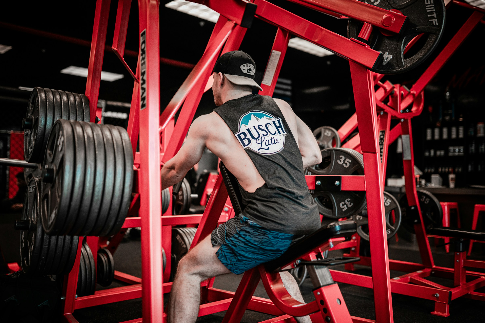

Workout Routines
Explore a variety of workout routines designed for all fitness levels. Each routine includes detailed descriptions of exercises, sets, and reps.
Full Body Strength Routine

This workout targets all major muscle groups. Perform the following exercises for 3 sets of 12 reps each:
- Squats
- Push-ups
- Deadlifts
- Planks
- Jumping Jacks
Upper Body Focus
Focus on building upper body strength with this routine. Complete 4 sets of 10 reps for each exercise:
- Bench Press
- Pull-ups
- Bicep Curls
- Tricep Dips
- Shoulder Press